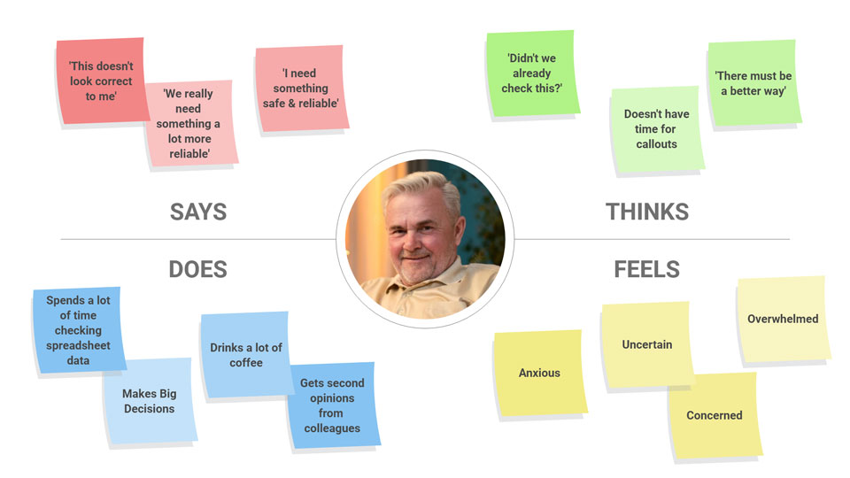
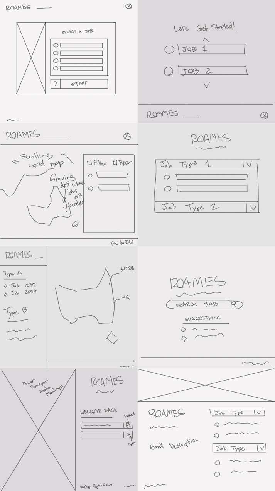
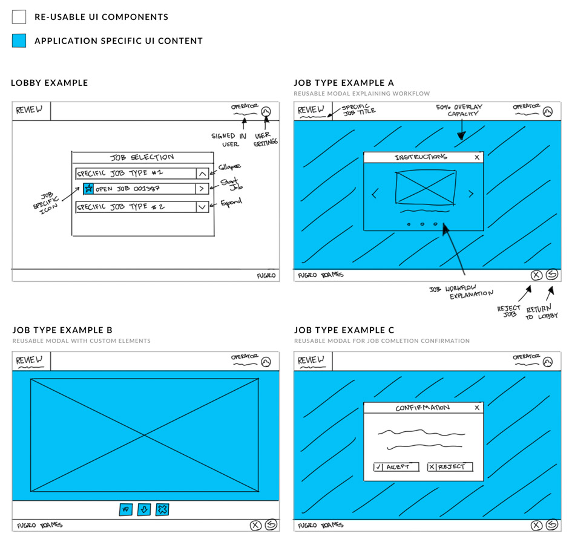
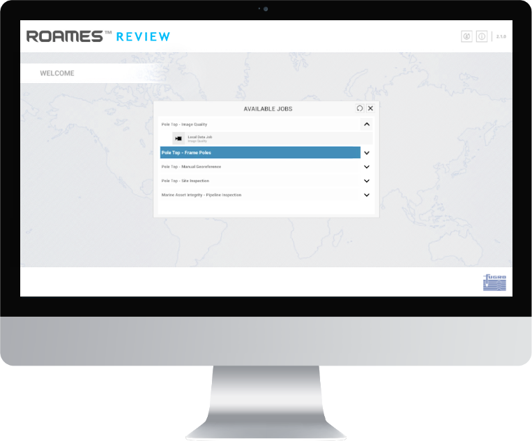

Fugro ROAMES · Enterprise Tools
Roames Review: replacing paper logbooks with a guided digital workflow
A job-based inspection tool that let power-network surveyors verify and report faults digitally — built with a dark mode from day one, because the people using it asked for one.
178,000km of power line. 1.7 million poles.
Ergon Energy, one of Queensland's largest energy companies, has to monitor and maintain a genuinely enormous network. Fugro ROAMES specialises in high-resolution aerial mapping for the electricity distribution sector, using airborne sensors to generate accurate 3D models of transmission networks and surrounding vegetation.
A process built on logbooks, memory, and long drives
Ergon ran yearly campaigns to monitor network condition and catch serious faults — like a damaged crossarm that could drop a live line and start a fire. Surveyors drove hours to investigate sites manually, recorded findings in physical logbooks, then transcribed them back at the office.
Logbooks went missing. Poles got mixed up. Findings were often subjective, with no easy way for a colleague to verify a call. The whole process was slow, error-prone, and expensive — leaning heavily on the time and expertise of veteran linesmen who couldn't be everywhere at once.
Eight surveyors, one clear constraint
Through Fugro's existing relationship with Ergon, I interviewed 8 surveyors on-site about their routines and pain points. They were a fairly uniform group — similar age range, same company-issued equipment, comparable technical comfort — which made it clear early on that the solution needed to be desktop, browser-based, and able to clear Ergon's lengthy IT security approval process.
I translated the interviews into an empathy map and two personas — a primary "Power Line Surveyor" persona, and a secondary "QA Analyst" persona reflecting a stakeholder proposal to offload some lower-skill verification work to a QA team as a cost-saving measure.

Designing for someone who can't afford to guess
The HPC team's concept was to break inspection work into smaller "jobs," distributed to users based on seniority and qualification. Given my research showed the primary persona had limited technical confidence, I leaned on the Nielsen-Molich heuristics throughout — visible status, easy error recovery, no unnecessary clutter, plain-language guidance over reliance on memory.
Keep users informed
Status is always visible — never silent or ambiguous.
Offer control, prevent errors
Easy undo, and warnings before risky actions.
Reduce clutter and reliance on memory
Show only what's relevant to the current task.
Stay flexible for experienced users
Faster paths for people who already know the job.
Working with engineering on how the AWS backend would serve jobs to the front end, I ran a Crazy 8s session and landed on a "lobby" concept — surveyors log in and see a queue of available work, scoped to their qualifications. I pitched it as "Roames Review," and the team ran with it.


What surveyors asked for first
I built an interactive Adobe XD prototype for on-site testing with surveyors and our internal QA team. The very first piece of feedback wasn't about workflow at all.
The dark version tested well enough that I designed every job interface natively for dark mode rather than offering both — the value of a light alternative didn't justify the added development cost.

From there, each job type went through the same cycle — wireframes, low-fidelity interactive mockups, on-site testing. I also built a custom, chainable animation system in Unity so every action gave the surveyor clear visual feedback, rather than leaving them guessing whether something had registered.
From months in the field to a faster, repeatable process
Ergon reduced annual campaign work from months to a fraction of that, with a meaningful drop in operational cost — a saving in the millions of Australian dollars. Off the back of it, Fugro ROAMES won a competitive tender to do similar work for Essential Energy in New South Wales, and later extended the same approach to marine asset-integrity projects for Fugro's Western Australian office, where I designed the interfaces and flows for the new job types remotely.